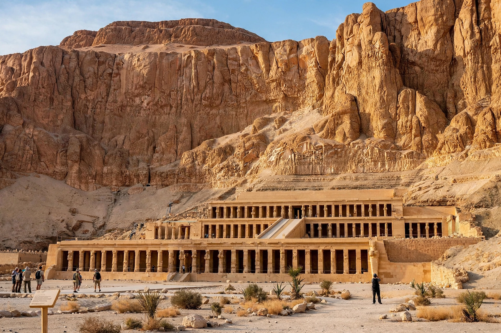

Deir el-Bahari

Deir el-Bahari or Deir el-Bahri (Arabic: الدير البحري, "the Northern Monastery") is a complex of mortuary temples and tombs located on the west bank of the Nile, opposite the city of Luxor in Egypt. It forms part of the Theban Necropolis.
The temples
The earliest structure is the mortuary temple of Mentuhotep II of the 11th Dynasty (c. 2000 BC), the pharaoh who reunified Egypt, whose innovative terraced tomb-temple combined a pyramid-like mound with columned halls. Beside it stands the most famous building of the complex: the mortuary temple of the female pharaoh Hatshepsut (c. 1479–1458 BC), designed by her steward Senenmut. Built on three ascending terraces connected by ramps, its reliefs depict Hatshepsut's divine birth and the celebrated trading expedition to the Land of Punt. The third temple, built for Thutmose III, lies between the two and was largely destroyed by a rockfall.
Royal cache
In 1881 a tomb in the cliffs above the complex (TT320, the "Royal Cache") was officially revealed, containing the mummies of more than fifty pharaohs, queens and nobles — including Ahmose I, Thutmose III, Seti I and Ramesses II — hidden there by priests to protect them from tomb robbers. In 1891 a second cache of priestly mummies was found nearby. In the Coptic era a monastery of Saint Phoibammon occupied Hatshepsut's temple, giving the site its Arabic name.
Modern history
The temples have been excavated and restored since the 19th century, notably by Édouard Naville and later by a Polish mission that continues work on Hatshepsut's temple. On 17 November 1997, 62 people, mostly tourists, were murdered at the site by Islamist militants, an attack that devastated Egypt's tourist industry for several years.
See also: Hatshepsut, Valley of the Kings, Luxor.